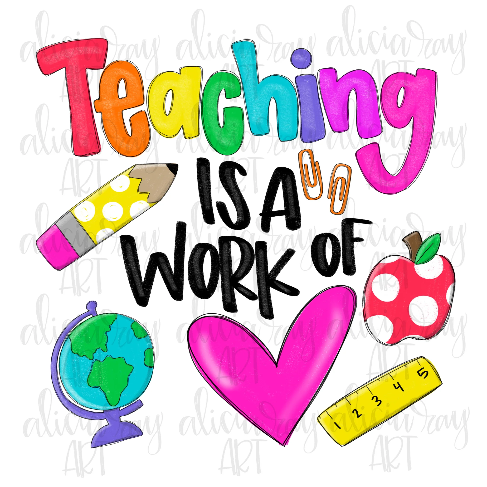
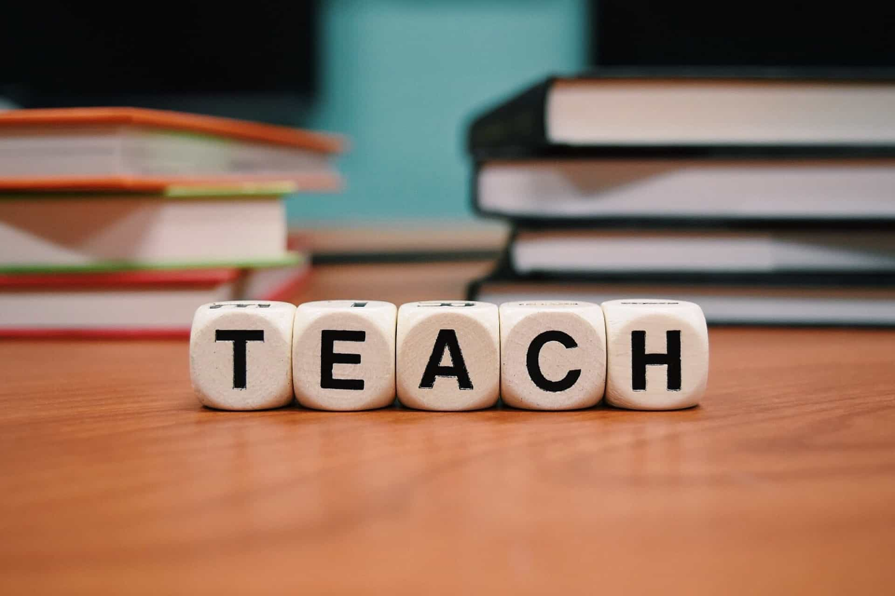
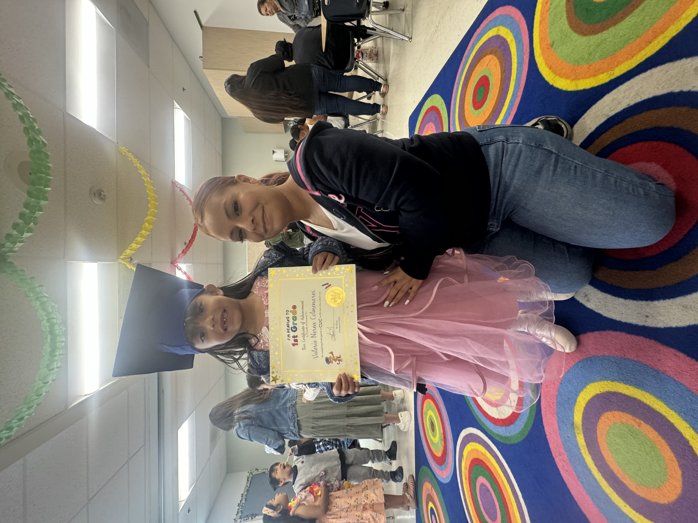
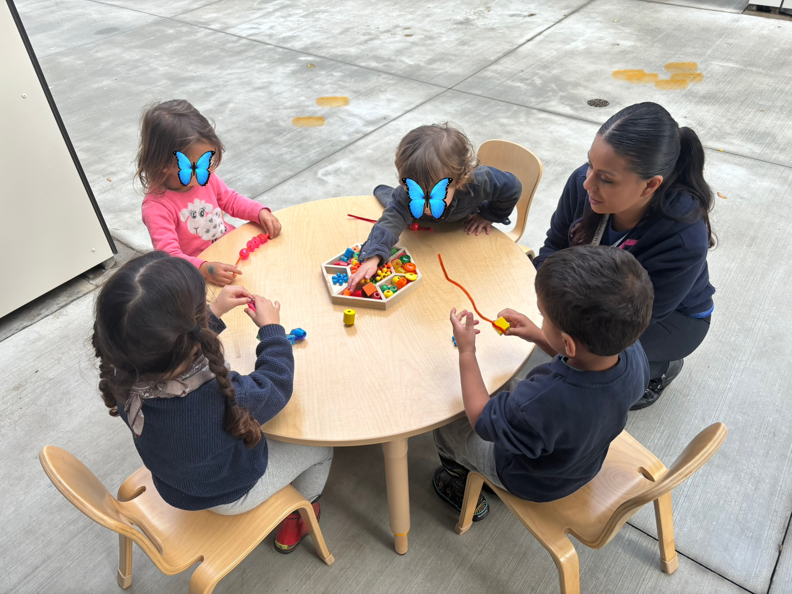

Rosie's Teaching Portfolio
"Inspiring the next generation with passion and dedication. Ensuring that each little heart remembers that there was always a teacher there that cared for them. Never forgetting the true reason why we are here."
Philosophy
Rita Pearson once said, "This job is not impossible. We can do this. WE ARE EDUCATORS. We are born to make a difference." ECE teachers are one of the first teachers that a child gets in their life. I believe that we have a huge impact on them. I want that, I want to be the one who they know is loving and heartwarming. I want to make a difference in their life and knowing that ECE is a crucial step to their growth, that is something I want to be a part of.
Experience
I have previously worked with toddlers at Growing Places in Santa Monica. In 2024, I had the opportunity to observe three different classrooms at Reseda Elementrary School ranging from grades tw, three, and five.
Goals & Ambitions
The role of an ECE teacher is to have a safe and loving environment. It is also to support them to develop their social emotional skills. Also, to create an adequate learning curriculum. Especially, to guide them through every milestone that they have. The most important of all, observe and make any changes that need to be made either in the classroom or in their curriculum. I aim to make sure it is a diverse classroom for all. This way, the children can learn about each other, their families backgrounds, and new things about each other. I want to make sure that they can meet their social, emotional, and physical development. Also, to make sure they feel loved so they can retain new information. They say that learning begins from the heart.
Extracurricular Activities
A little about what I have done.
